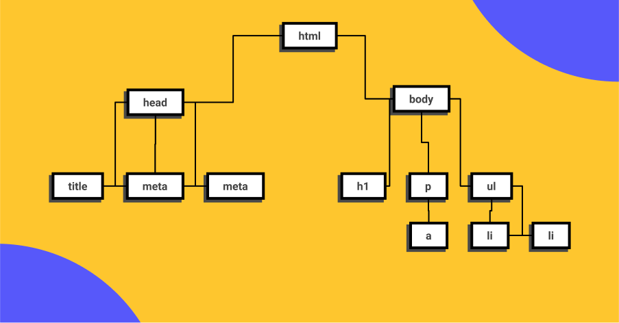

Curso esencial de HTML y CSS
Este es el inicio de tu carrera como Desarrollador Web, empezarás aprendiendo HTML y CSS para la creación de contenidos, en el nivel 2 aprenderás de componentes y en 3 sobre layouts.
Setup
Google Chrome
Chrome va a ser el navegador que utilizaremos en el curso por su extenso soporte de nuevos estándares y herramientas de desarrollo avanzadas y de amigable uso.
Visual Studio Code
Visual Studio Code es el editor de texto más popular y potente del mercado actualmente, su fácil uso y la capacidad de extenderlo por medio de plugins lo hace el complemento perfecto para cualquier programador sin importar el lenguaje en el que se desemvuelva.

Figma
Figma es una la herramienta más popular en la actualidad para entregar diseños a los desarrolladores para su implementación por su fácil uso porque puede ser usado directamente desde el navegador.
GitHub
Así como en Facebook te encuentran tus amigos, en Github te encuentran otras programadoras y programadores de todo el mundo, en vez de subir fotos de tus viajes aquí subes tu código y puedes elegir hacerlo “open source” o guardarlo de manera privada, Github será esencial para almacenar tu futuro portafolio.
"Tus talentos y habilidades irán mejorando con el tiempo, pero para eso has de empezar"
-Martin Luther King
Conceptos esenciales del Desarrollo Web
Qué es HTML
Hyper Text Markup Language o Lenguaje de marcas Hipertexto. Es el componente más básico de la web. Define el
significado
y la estructura del contenido. html lang="en"
<!DOCTYPE html>
<html lang="es">
<head>
<meta charset="UTF-8">
<meta http-equiv="X-UA-Compatible" content="IE=edge">
<meta name="viewport" content="width=device-width, initial-scale=1.0">
<title>Curso HTML y CSS</title>
Etiquetas
Las etiquetas HTML van a ayudarnos a brindar una estructura y semántica al contenido de nuestro website y cada una tiene características y usos diferentes aunque visualmente den un resultado similar.
Muchas etiquetas son fácil de diferencias como los headings o las imágenes y otras diferentes como header, footer, section o div, aquí es donde la semántica será la respuesta y si sabemos un poco de inglés también podremos darnos una pequeña idea de su uso pero en este curso vamos a usar las más importantes y que serán parte de tu día a día como Software Developer.
DOM
El Document Object Model es una estructura de árbol que representará todos nuestros proyectos web como si un árbol genealógico fuera: padres, hijos, hermanos con niveles infinitos. cuando entendemos esta anidación podemos identificar dependencias, herencias en css y que tan complejo es nuestro proyecto.
Semántica
La semántica le brinda sentido a cada elemento existen en un sitio web, algunos elementos será meramente decorativos y no deben significar nada pero otros serán títulos y deberán estar en diferente jerarquías o alguna secciones serán más relevantes que otras, esto ayudará a los motores de búsqueda como Google o Duck Duck Go a diferenciar tu contenido, categorizar y será la herramientas más valiosa para estar en los primeros resultados de búsqueda SEO. También ayudará a la accesibilidad de tu sitio web, para que personas con habilidades diferentes puedan entender cada contenido.
Atributos
Los atributos le dan características extra a las etiquetas para complementar información y son pre programadas por el navegador, algunos atributos funcionan en todas las etiquetas de la misma forma como ‘class’ pero otros atributos funcionan en solo alguna etiquetas como src
Qué es CSS
Hojas de Estilo en Cascada (del inglés Cascading Style Sheets) o CSS es el lenguaje de estilos utilizado para describir la presentación de documentos HTML

Modelo de caja
El modelo de caja está compuesto por:
Chrome va a ser el navegador que utilizaremos en el curso por su extenso soporte de nuevos estándares y herramientas de desarrollo avanzadas y de amigable uso.
- Tamaño del del contenido / ancho y alto
- Padding / Relleno
- Border / Bordes
- Margin / Márgenes
Propiedades físicas para el modelo de caja:
- width / height
- margin / margin-top | margin-right | margin-bottom | margin-left
- border / border-top | border-right | border-bottom | border-left
- padding / padding-top | padding-right | padding-bottom | padding-left
Propiedades lógicas para el modelo de caja:
- inline-size / block-size
- margin-block | margin-inline | margin-block-start | margin-block-end | margin-inline-start | margin-inline-end
- border-block | border-inline | border-block-start | border-block-end | border-inline-start | border-inline-end
- padding-block | padding-inline | padding-block-start | padding-block-end | padding-inline-start | padding-inline-end
Para tener en cuenta y no olvidar
Tipos de Rutas de Archivos que existen en HTML 5
Más información sobre el tema Tipos de Rutas de Archivos que existen en HTML 5
Entidades HTML / Caracteres reservados para código en texto
Para agregar un código HTML como ejemplo en la página, se usa estas entidades de forma tal que HTML no lo reconozca como código, sino como texto. Por Ejemplo: Qué es HTML
En está página se puede realizar la acción de forma más rápida. freeformatter.com
Más información sobre el tema
Entidades
Pseudo-clases en Css
Una pseudoclase CSS es una palabra clave que se añade a los selectores y que especifica un estado especial del elemento seleccionado. Por ejemplo, :hover aplicará un estilo cuando el usuario haga hover sobre el elemento especificado por el selector.
Más información sobre el tema Pseudo-Clases
Propiedades personalizadas - CSS
Los nombres de las propiedades que tiene el prefijo --, como --ejemplo-nombre, representan las propiedades personalizadas que contienen un valor que puede ser usado en otras declaraciones usando la función va. Como por ejemplo:
--somekeyword: left;
--somecolor: #0000ff;
--somecomplexvalue: 3px 6px rgb(20, 32, 54);
Más información sobre el tema Propiedades Personalizadas CSS
Pseudoelementos en CSS
Al igual que las pseudo-classes, los pseudo-elementos se añaden a los selectores, pero en cambio, no describen un
estado
especial sino que, permiten añadir estilos a una parte concreta del documento. Por ejemplo, el pseudoelemento
" ::first-line " selecciona solo la primera línea del elemento especificado por el selector.
Más información sobre el tema Pseudoelementos
Modelo de Caja CSS
Todo en CSS tiene una caja alrededor, y comprender estas cajas es clave para poder crear diseños con CSS o para alinear elementos con otros elementos. En este artículo, echaremos un vistazo más de cerca al modelo de cajas en CSS con el que vas a poder crear diseños de compaginación más complejos con una comprensión de cómo funciona y la terminología relacionada.
Video Explicación Sobre Modelo de Cajas en CSS
Correo de Contacto: mailto:karenj.cortes@outlook.com